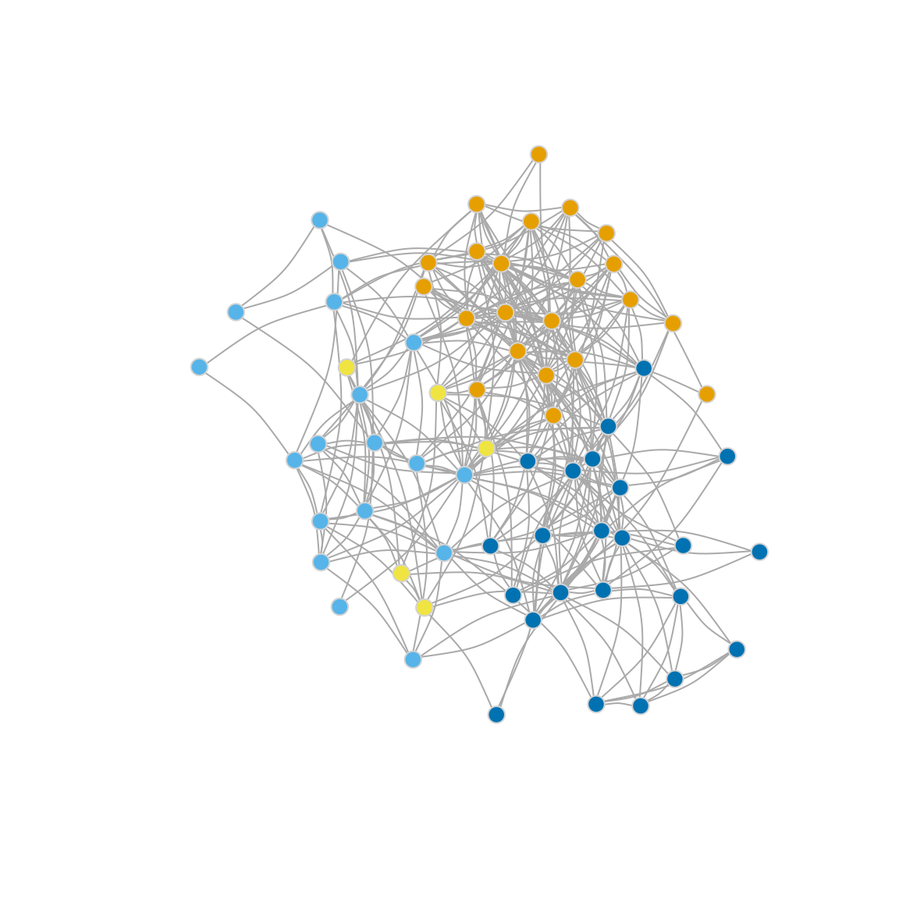

The Louvain Approach to Community Detection
As we saw in the modularity notes, Newman’s greedy algorithm fuses whole communities, two at a time, and never looks back. The Louvain method proposed by Blondel et al. (2008) uses a similar bottom-up strategy, with every node starting in their own singleton community, but instead of merging pairs of communities, it moves single nodes from the community they are in to a neighboring community (a community where a node they are connected has already been assigned), trying out one move at a time, ultimately keeping any move that strictly increases the modularity. This results in a local search that continues until no single-node move can improve the modularity, at which point the current partition is a local optimum.
Then a second step kicks in, which collapses the communities found so far into single super-nodes creating a smaller weighted graph in which the communities found in the first step are the nodes and the weighted ties between them count how many edges ran between the two communities in the original network. The modularity of the weighted graph under the partition in which every super-node is its own community is exactly the modularity of the first-step partition in the original graph, so nothing is lost, but the network is now much smaller. The alternation repeats until nothing improves, and the communities of the original network are read off by undoing the aggregations.
Here we explore the method twice. In the first pass, we score every candidate move by recomputing the modularity of the whole partition from nothing, so that the logic of the algorithm stays visible on every line. The second approach follows Fouss et al. (2016, 379–80), whose step 1 uses the modularity matrix \(\mathbf{B}\) to score candidate moves and whose step 2 is a single matrix product using the membership matrix \(\mathbf{U}\) that assigns nodes to communities (as discussed in the modularity notes).
The running example is the Lazega law firm friendship network (Lazega 2001) with degree-one nodes dropped, the same network used in the modularity note.
1 Step 1: Local Optimization by Moving Nodes Around
Here’s a function that implements the first step just described cyclying through the nodes in random order, moving each node into each of its adjacent communities, and keeping the move if it improves the modularity:
Code
louvain.step1 <- function(x, seed = 123) {
set.seed(seed)
n <- vcount(x)
comm <- 1:n # every node starts in its own community
p <- 0
m <- Inf # moves made in the most recent full pass
while (m > 0) {
p <- p + 1
m <- 0
for (i in sample(n)) { # nodes are visited in random order
Ni <- neighbors(x, i) # neighbors of node i
commNi <- unique(comm[Ni]) # communities of i's neighbors
adjclust <- setdiff(commNi, comm[i]) # i's adjacent communities, excluding its own
if (length(adjclust) == 0) next # no adjacent community to move into
best.mod <- 0
t <- NULL
for (k in adjclust) { # loop over adjacent communities
tc <- comm
tc[i] <- k # tentatively move i into community k
mod.diff <- modularity(x, tc) - modularity(x, comm) # modularity change from the move
if (mod.diff > best.mod) {
best.mod <- mod.diff
t <- k # setting the target community to the one that gives the best gain
}
} # end of loop over adjacent communities
if (!is.null(t)) { # if a move was found that improves modularity
comm[i] <- t # move i into the best adjacent community
m <- m + 1 # update the count of moves made in this pass
}
}
}
return(comm)
}Lines 1-2 take the graph as an input and set the random-number seed from the
seedargument. Fixing the seed matters because the algorithm randomizes the node list before looping through them and different randomization orders can lead to different modularity maximization local optima. Line 3 counts the number of nodes, and line 4 gives every node its own community label (a vector of numbers between 1 and \(N\) where \(N\) is the number of nodes), so like the greedy algorithm the Louvain method also starts with every node in their own community.In line 6 we assign the object
m(which counts how many nodes were relocated during the most recent full pass) the initial value ofInf. In line 7, thewhileloop is initialized which keeps going as long asmis greater than zero in each pass (stored in thepcounter in line 8). An entire pass over every node that produces no relocations (m = 0) means no single-node move anywhere in the network can improve the modularity, so that’s the end of thewhileloop. Line 9 resets the move count to zero before the sweep over nodes begins in theforloop in Line 10. The sweep is over a random ordering of the nodes, which we get using the nativeRfunctionsampleapplied to the vector of node numbers.Lines 11-14 identify the candidate destinations for the current node
i, in three steps. First, line 11 collects a vector of the node IDs of the neighbors ofiusing theigraphfunctionneighbors. Second, line 12 collects a vector of the community labels of those neighbors, eliminating repeats (for neighbors in the same community) using the nativeRfunctionunique. Third, line 13 removesi’s own community from that list withsetdiff, storing the node’s adjacent communities in theadjclustobject (the communities containing at least one neighbor ofiother thani’s own). If that set is empty, line 14 skips the node.Lines 15-23 figure out whether the modularity improves based on candidate moves. For each node
iand each adjacent communitykof that node, lines 18-19 copy the current vector of community labels into the objecttc(line 18) and tentatively reassignitok(line 19). Line 20 computes the gain in modularity obtained from this reassignment by computing the modularity of the modified partition (modularity(x, tc)) and subtracting the modularity of the original one (modularity(x, comm)). If the gain in modularity from that node move is the best one we have seen so far in the loop then we store it inbest.modand record the community that produced it in objectt(line 23) If this happens, line 27 movesiinto communitytin the main community vector and line 28 increments themcounter.
Let’s see louvain.step1 in action on the law firm network:
lv.res
3 7 23 44 45 56 64
3 4 21 7 10 17 6 [1] 0.3256105The louvain.step1 function puts the sixty-eight lawyers in \(k=\) 7 communities, three of them relatively large and four of them with fewer than ten members, for a modularity of 0.3256105. That is a good partition, but the presence of small clusters alongside the large ones should makes us suspect a better arrangement exists at a coarser grain.
2 Step 2: Aggregation into a Community Graph
The second step in the Louvain approach builds a new weighted graph whose nodes are the communities found in step 1. Each community becomes a single node, two communities connected by any links in the original graph become adjacent nodes joined by an edge whose weight is the total weight of the links between them, and each community node carries a self-loop whose weight is the total weight of the links internal to that community.
Here’s a function that creates the community graph from the original graph and the community assingments from step 1:
Code
louvain.step2 <- function(x, comm) {
A <- as.matrix(as_adjacency_matrix(x, attr = if (is_weighted(x)) "weight" else NULL)) # adjacency matrix of the current graph
u <- unique(comm) # the community labels become the new nodes
K <- length(u) # number of communities found by step 1
C <- matrix(0, K, K) # empty adjacency matrix of the community graph
rownames(C) <- u # label the new nodes by their original community labels
colnames(C) <- u # label the new nodes by their original community labels
for (i in 1:nrow(A)) {
for (j in i:ncol(A)) { # each unordered pair of nodes, and each diagonal cell, is visited once
w <- A[i, j] # weight of the link between i and j (zero when there is none)
if (w == 0) next # nothing to file for a pair that is not linked
a <- as.character(comm[i])
b <- as.character(comm[j])
C[a, b] <- C[a, b] + w # add the edge's weight to the cell for its two communities
if (a != b) C[b, a] <- C[b, a] + w # mirror the partner cell the upper loop skips
}
}
G <- graph_from_adjacency_matrix(C, mode = "undirected", weighted = TRUE, diag = TRUE)
return(G)
}This function takes an igraph graph object x and a vector of community labels comm as input and returns a new igraph graph object whose nodes are the communities found in step 1.
Line 2 converts the current graph to a plain adjacency matrix. Lines 3-4 set up the community-level accounting. Line 3 creates a vector of unique community labels and stores it in
u. Line 4 counts the number of communities, which will be the number of nodes of the new weighted graph. Lines 5-7 set up an emptyKbyKmatrixCto hold the adjacency structure of the weighted graph, labeling its rows and columns with the original community labels.The double for loop in lines 8-17 fills in the adjacency matrix of the community graph
C. Note we set up the loop to just go through the upper triangle of the matrix to count each dyad only once (including diagonal entries). Line 10 extracts the weight of the link between the current pair, line 11 skips the pair when there is no link between them, and lines 12-13 translate the community labels of each nodes into character strings to use as row and column names in theCmatrix. Line 14 adds the weight of the edge between nodesiandjto the cell ofCcorresponding to the communities the two nodes belong to. Line 15 files the same weight in the symmetrical cell in theCmatrix whenever the two nodes belong to different communities. Edges between nodes who belong to the same community accumulate in the diagonals of theCmatrix, and edges connecting nodes belong to different communities accumulate in the two symmetric off-diagonal cells.Line 18 turns the matrix into an
igraphgraph object, withdiag = TRUEtelling the function to keep the self-loops andweighted = TRUEstoring the cell values as edge weights.
Here’s the function in action:
Code
23 3 7 56 44 45 64
23 112 6 4 26 6 41 2
3 6 2 1 4 0 0 0
7 4 1 4 8 0 3 0
56 26 4 8 63 18 21 10
44 6 0 0 18 13 9 5
45 41 0 3 21 9 23 2
64 2 0 0 10 5 2 15We can see that the seven community-nodes are now connected by weighted edges, with the weights counting how many friendship nominations exist between members of the two communities in the original network, and the self-loops counting how many exist within each community.
A key point of the exercise is that the modularity computed in the reduced community graph, where each node is assigned to a community, is the same as the modularity of the first-step partition in the original graph using the same community assignnents for all individual nodes. In this sense, aggregation loses no modularity relevant information, but shrinks the network from sixty-eight nodes to seven, so the next round of node moves using louvain.step1 works on this smaller network.
To verify, here’s the modularity in the original network with the first-step community assignments:
And here’s the modularity in the weighted community network, which each node serving as its community:
The two scores are identical; we are looking at a seven-node weighted network carrying the same modularity as a sixty-eight-node unweighted one, and running step 1 again on it is just another call to louvain.step1 with g.new in place of ug, which shuffles communities rather than nodes.
3 Putting the Two Steps Together
The full Louvain algorithm alternates the two steps we just defined until a pass of step 1 on the current community graph produces no modularity-improving moves.
Here is a function that does exactly that:
Code
louvain.full <- function(x, seed = 123) {
n <- vcount(x) # number of nodes in the original graph
x0 <- x # keep a copy of the original graph for the final modularity check
slot <- 1:n # where each original node lives in the current graph
history <- data.frame(nodes = integer(), Q = numeric()) # one row per level
repeat {
lv1 <- louvain.step1(x, seed = seed) # step 1 on the current graph
Q <- modularity(x, lv1, weights = E(x)$weight) # modularity of that partition
history <- rbind(history, data.frame(nodes = vcount(x), Q = Q)) # record the level
g.new <- louvain.step2(x, lv1) # communities become super-nodes
lv2 <- louvain.step1(g.new, seed = seed) # move super-nodes on the coarsened graph
Q.new <- modularity(g.new, lv2, weights = E(g.new)$weight) # modularity score of the super-node partition
if (Q.new <= Q) break # no improvement: the search is over
comm <- lv1[slot] # vector of current community assingments for each node
slot <- match(comm, unique(lv1)) # matching each node to where its community sits in the new graph
x <- g.new # replace the current graph with the coarsened graph for the next iteration
}
comm <- lv1[slot] # read off each node's community in the final partition
return(list(comm = comm, Q = modularity(x0, comm), history = history))
}The function takes an igraph graph object x and a random-number seed as input and returns a list with three components: a vector containing the final community partition of the original nodes, a scalar representing the modularity of this partition computed on the original graph, and a data frame recording the number of nodes and modularity at each level of the process.
Line 2 counts the nodes of the original graph, line 3 stashes a copy of it in object
x0so the modularity of the final partition can be computed on it directly, and line 4 initializes the objectslot, a vector tracking the community labels of each of the original nodes (every node starts in its own community). Line 5 starts thehistorydata frame, recording the nodes in each weighted community graph at each step in its first column and the modularity corresponding to that partition in its second column.Line 7 runs Louvain step 1 on the current graph, line 8 computes the modularity scores of the resulting partition, and line 9 appends the number of nodes and the modularity score to the
historydata frame. Lines 10-13 aggregate and decide. Line 10 collapses the current partition into its coarsened graph withlouvain.step2, line 11 runs step 1 on that weighted community graph, storing the resulting partition inlv2, so what gets moved this time are whole communities rather than single nodes. Lines 12-13 compare the modularity of the second step partition with the modularity of the current level. If it does not exceed the current modularity the search is over and therepeatloop breaks.If the modularity improved, the loop keeps going. Line 14 re-maps every original node, taking the community its stand-in now belongs to (
lv1[slot]) and swaping that community’s temporary label for the slot that label occupies as a node in the new graph (match(..., unique(lv1))). The labels from step 1 are arbitrary numbers with gaps, while the community graph numbers its nodes are now 1, 2, 3, which is the order the communities first appear. Line 15 then makes that community weighted graph the graph the next iteration works on.Once the search stops, line 17 reads off each original node’s community in the final partition by looking up its slot, and line 18 returns that partition, with the modularity computed on the original graph, along with the history of levels as a list with three named components.
Running louvain.full on the law firm network:
nodes Q
1 68 0.3256105
2 7 0.3335806[1] 0.3335806
1 4 5 6
21 24 13 10 The step 1 partition scored only 0.3256, but the full approach improves upon that, with the first aggregation collapsing the sixty-eight nodes into seven community-nodes, step 1 shuffling those community-nodes into a more optimal arrangement. The modularity climbs to 0.3336 before the search bottoms out at the next level. The final comm vector is a partition of the original sixty-eight lawyers into the four communities.
Because the method is a local search influenced by the initial randomization order, different seeds can get stuck in different local optima. Running the full method ten times, once from each seed from 1 to 10, and keeping the partition with the highest modularity gives a better look at what the best Louvain partitin might look like:
Code
[1] 0.3723549
1 2 4 5
22 18 5 23 The winner reaches 0.3724, a four-community split that no single run of louvain.full was guaranteed to find.
4 The Modularity-Matrix Way
Fouss et al. (2016, 379–80) describe a more efficient implementation of the Louvain method that uses the modularity matrix \(\mathbf{B}\) to score candidate moves, rather than recomputing the modularity of the whole partition from scratch for each move. This approach reduces the computational cost of evaluating moves, especially in large networks. The other piece of information we will need is the matrix \(U\) which is the \(N \times k\) biadjacency matrix of the current partition, where \(N\) is the number of nodes and \(k\) is the number of communities. Each row of \(U\) corresponds to a node, and each column corresponds to a community. The entry \(u_{ij} = 1\) if node \(i\) belongs to community \(j\), and 0 otherwise.
This means that the change in the modularity (\(\Delta Q(i, C_l)\)) that results from moveing node \(i\) from its current community \(C_k\) to a neighboring community \(C_l\) is given by:
\[ \Delta Q(i, C_l) = \frac{2}{\sum_i\sum_j a_{ij}}\left(\mathbf{e}_i + \mathbf{u}_l - \mathbf{u}_k\right)^T\mathbf{b}_i \tag{1}\]
Where \(\mathbf{e}_i\) is the unit vector of length \(N\) (the nummber of nodes) with a one in position \(i\) and zero everywhere else, \(\mathbf{u}_k\) is the membership vector of \(i\)’s current community (the \(k^{th}\) column of \(\mathbf{U}\)) also of length \(N\), and \(\mathbf{b}_i = \mathbf{B}\mathbf{e}_i\) is the \(i^{th}\) column of \(\mathbf{B}\) also of length \(N\).
So here’s a version of Louvain step 1 using these shortcuts:
Code
louvain.book.step1 <- function(x) {
n <- vcount(x)
B <- modularity_matrix(x, directed = FALSE) # left NULL, weights default to the "weight" edge attribute
A.x <- as.matrix(as_adjacency_matrix(x, attr = if (is_weighted(x)) "weight" else NULL))
vol <- sum(A.x)
U <- diag(1, n, n) # membership matrix: U = I, each node its own cluster
lab <- 1:n # vector of community labels, one per node, matching the columns of U
repeat {
m <- 0
for (i in 1:n) { # loop over nodes in order
Ni <- neighbors(x, i) # neighbors of node i
adj <- setdiff(unique(lab[Ni]), lab[i]) # adjacent clusters i could move into, excluding its own
if (length(adj) == 0) next # skip nodes with no adjacent clusters
bi <- B[i, ] # b_i, i's column of the modularity matrix
ei <- numeric(n); ei[i] <- 1 # e_i, the unit vector for node i
uk <- U[, lab[i]] # u_k, the indicator of i's current community
gains <- sapply(adj, function(l) {(2 / vol) * as.numeric(t(ei + U[, l] - uk) %*% bi)}) # (e_i + u_l - u_k)^T b_i
lstar <- adj[which.max(gains)] # first maximum wins ties
if (max(gains) > 0) { # strictly positive moves only
U[i, lab[i]] <- 0 # move i out of its current community in U
U[i, lstar] <- 1 # assign i to the new community in U
lab[i] <- lstar # update i's community label
m <- m + 1
}
}
if (m == 0) break
U <- U[, colSums(U) > 0, drop = FALSE] # delete the empty clusters' columns
lab <- max.col(U) # recompute every label from the shrunken U
}
return(list(U = U, lab = lab))
}This function takes an igraph graph object as input and returns a list with two components: the biadjacency membership matrix U and the vector of community labels lab.
Line 3 computes the graph’s modularity matrix with the
igraphfunctionmodularity_matrix; left to its defaults, that function reads theweightedge attribute whenever the graph has one, so the matrix matches the weighted modularity automatically. Lines 4-5 compute \(\sum_i\sum_j a_{ij}\) as the sum of the adjacency matrix, which counts every undirected edge twice. Line 4 extracts the graph’s adjacency matrix, while line 6 initializes the membership matrixUas the identity matrix (as many communities in the columns as there are nodes since each nodes starts in its own community). Line 7 initializes the label vectorlabto match the number of columns ofU.Line 9 resets the move counter at the top of each pass in the
repeatloop, and line 10 loops over the each node in order.1 Line 11 collectsi’s neighbors in a vectorNi, line 12 lists the communities those neighbors belong to and subtractsi’s own community using thesetdifffunction. Line 13 skips the node when that node is not connected to nodes in any other community.Line 14 pulls column \(\mathbf{b}_i\) out of the modularity matrix, line 15 builds the unit vector \(\mathbf{e}_i\), and line 16 sets \(\mathbf{u}_k\) to the indicator vector of
i’s own community. Line 17 computes the gain according to Equation 1, using the nativeRshorcutsapply: for each candidate communityl. Theas.numericwrapper strips the \(1 \times 1\) matrix the product returns down to a scalar, so the scores come back as an ordinary vector. Nothing is recomputed from scratch anywhere.Lines 20-26 confirm the winning move. Line 20 picks the adjacent community with the largest gain, breaking ties by taking the first maximum. Line 21 applies the strict positivity test, and lines 22-25 carry out the move exactly as Algorithm 8.7 does; zero out the node’s old membership entry, set the new one, update the label, count the move. A node that was alone in its old cluster leaves behind an all-zero column, and that empty cluster sits there until the end of the pass.
Lines 28-30 perform the cleanup at the end of each iteration of Algorithm 8.7. Line 29 deletes the zero columns of
U, and line 30 recomputes every node’s label from the shrunken matrix as the position of its one. The column bookkeeping is the pseudocode’s answer to a problem the label-vector version never faces; because communities are columns of a matrix rather than entries of a vector, empty clusters have to be physically removed and every label renumbered before the next pass.
Before trusting the formula, take a node that is still alone and score its gains into each adjacent community both ways:
Code
i <- 5
B <- modularity_matrix(ug, directed = FALSE)
vol.ug <- sum(as.matrix(as_adjacency_matrix(ug)))
U0 <- diag(1, vcount(ug))
lab0 <- 1:vcount(ug)
ei <- numeric(vcount(ug)); ei[i] <- 1
Ni <- neighbors(ug, i)
adj <- setdiff(unique(lab0[Ni]), lab0[i])
gb <- sapply(adj, function(l) (2/vol.ug) * as.numeric(t(ei + U0[, l] - U0[, i]) %*% B[i, ]))
gbr <- sapply(adj, function(l) {
tc <- lab0; tc[i] <- l
modularity(ug, tc) - modularity(ug, lab0)
})
round(rbind(book = gb, brute = gbr), 6) [,1] [,2] [,3] [,4] [,5] [,6]
book 0.002456 0.002096 0.002342 0.002247 0.002228 0.002266
brute 0.002456 0.002096 0.002342 0.002247 0.002228 0.002266[1] 6.071532e-18The two scoring engines agree to machine precision, as the printed maximum difference at the end of the chunk shows. The one-sided formula is not an approximation of the full gain. Expanding the before-and-after difference leaves exactly the cross terms in Equation 1, and the case of a node alone in its cluster survives too, because the vanishing source cluster contributes a \(-b_{ii}\) that cancels the \(+b_{ii}\) coming from the destination.
Step 1 written this way does not even need a seed:
1 2 3 4 5 6
8 5 14 3 20 18 [1] 0.3448051Fixed-order step 1 finds six communities, of sizes 8, 5, 14, 3, 20, and 18, with a modularity of 0.3448. Our own randomized version, visiting nodes in random order from seed 123, found seven communities with a modularity of only 0.3256. Same algorithm, same network, same stopping rule, different visitation order, different local optimum, and here the deterministic order of Algorithm 8.7 happens to land in the better one.
5 The Coarsening Step in One Line
Step 2 (Fouss et al. 2016, 380) is far more compact than its step 1, because the membership matrix \(\mathbf{U}\) already encodes the partition and the coarsened adjacency matrix is just the triple product
\[ \mathbf{A}' = \mathbf{U}^T\mathbf{A}\mathbf{U} \tag{2}\]
which sums the original adjacency entries over every pair of nodes mapped to the same pair of communities. Here is the literal translation, with one optional repair switch we will need in a moment:
Code
louvain.book.step2 <- function(x, U, halve.diag = FALSE) {
A <- as.matrix(as_adjacency_matrix(x, attr = if (is_weighted(x)) "weight" else NULL))
A.new <- t(U) %*% A %*% U
if (halve.diag) diag(A.new) <- diag(A.new) / 2
graph_from_adjacency_matrix(A.new, mode = "undirected", weighted = TRUE, diag = TRUE)
}Line 2 converts the current graph to an adjacency matrix, reaching for the
weightattribute when the graph is weighted so that aggregation preserves tie strength.Line 3 is Algorithm 8.8 verbatim (Fouss et al. 2016, 380). Edges between different communities pile up in the off-diagonal cells, and edges within a community pile up on the diagonal.
Line 4 optionally halves the diagonal, a correction that Algorithm 8.8 does not contain (Fouss et al. 2016, 380).
Line 5 turns the matrix into a graph, keeping the self-loops and storing the cell values as edge weights.
The authors assert in a footnote that modularity after aggregation equals modularity before (Fouss et al. 2016, 378). Our own version of the coarsening step just passed that check exactly. Does the literal matrix version pass it too?
Code
A.lit <- louvain.book.step2(ug, b.ug$U, halve.diag = FALSE)
A.hal <- louvain.book.step2(ug, b.ug$U, halve.diag = TRUE)
rbind(
before = modularity(ug, b.ug$lab),
literal = modularity(A.lit, 1:vcount(A.lit), weights = E(A.lit)$weight),
halved = modularity(A.hal, 1:vcount(A.hal), weights = E(A.hal)$weight)
) [,1]
before 0.3448051
literal 0.4864524
halved 0.3448051It does not. The literal coarsened graph claims a modularity of 0.4865 where the original partition scored 0.3448, an inflation of more than forty percent out of nowhere, while the halved version reproduces the original score exactly.
What went wrong is a clash of conventions rather than an algebra error. The double product in Equation 2 counts every unordered pair of nodes twice, so each community’s diagonal cell accumulates twice its true internal edge weight, and that doubled value becomes the weight of the coarsened graph’s self-loop. The convention used in Fouss et al. (2016) absorbs the doubling consistently, because it sums the volume over all matrix entries, loops included, and counts loops twice in the degrees as well. Under that convention the footnote is correct. igraph’s modularity() lives in a different convention, one where a self-loop enters the accounting once, so feeding it a coarsened graph with doubled self-loops over-credits every community’s internal density. The invariance theorem is convention-relative and Algorithm 8.8 does not say which convention it assumes, and the halving on line 4 is the translation from that convention into igraph’s. Our own louvain.step2 sidesteps the discrepancy by filing each unordered pair once, so no correction is needed there; with the membership matrix in play we can see exactly why the correction is load-bearing rather than decorative.
6 Assembling the Two Algorithms
The authors describe the full method as alternating the two steps until nothing improves (Fouss et al. 2016, 378), and stop there. What they never say is how to translate the communities found on the coarsened graph back down to the nodes of the original network, since Algorithm 8.8 returns only the new adjacency matrix with no record of which original node lives inside which super-node. That silence is where a naive implementation goes wrong, and the fix is the same slot vector as before.
Code
louvain.book.full <- function(x, halve.diag = FALSE) {
x0 <- x # keep the original graph for the final modularity check
n <- vcount(x)
slot <- 1:n # where each original node lives in the current graph
history <- data.frame(nodes = integer(), Q = numeric())
repeat {
s1 <- louvain.book.step1(x)
U <- s1$U; lab <- s1$lab
Q <- modularity(x, lab, weights = E(x)$weight)
history <- rbind(history, data.frame(nodes = vcount(x), Q = Q))
G <- louvain.book.step2(x, U, halve.diag = halve.diag)
s2 <- louvain.book.step1(G)
Q.new <- modularity(G, s2$lab, weights = E(G)$weight)
if (Q.new <= Q) break # no improvement: the search is over
slot <- lab[slot] # each node moves to where its community sits
x <- G
}
comm <- lab[slot] # read off each original node's final community
list(comm = comm, Q = modularity(x0, comm, weights = E(x0)$weight), history = history)
}It works like this:
Lines 2-5 set things up, stashing the original graph, starting every node at its own position, and opening the per-level history.
Lines 6-10 run one level, calling the step 1 function, scoring the resulting partition, and recording the level.
Lines 11-14 aggregate and decide. Line 11 coarsens with Algorithm 8.8, line 12 runs step 1 on the coarsened graph so that whole communities rather than single nodes get shuffled, and lines 13-14 stop the search when the coarsened level fails to beat the current one.
Lines 15-16 keep the books when the search continues, re-addressing every original node to its community’s position on the coarsened graph and promoting that graph.
Lines 18-19 finish up by reading each original node’s community off its slot and returning the partition, its modularity on the original graph, and the level history.
Running the repaired version, and then running it a second time to see what the fixed order buys:
nodes Q
1 68 0.3448051
2 6 0.3712185[1] 0.3712185
1 2 3 4
27 3 20 18 [1] TRUEThe deterministic version needs no seed and no tournament; every run is the run, and both calls return the same partition. It lands in four communities, of sizes 27, 3, 20, and 18, with a modularity of 0.3712. Our randomized version needed ten starts to beat that, and only just, at 0.3724.
Skipping the repair gives a more interesting kind of failure:
nodes Q
1 68 0.3448051
2 6 0.4878476
3 4 0.4899466[1] 0.3686807The literal run does not crash and does not even return a bad-looking answer. It climbs steadily, from 0.3448 to 0.4878 to 0.4899 on ever-coarser graphs, and keeps going for an extra level because those inflated scores keep “improving.” The climb is phantom, though, since the scores come from graphs whose self-loops over-credit internal density, and when the final partition is read back on the original network it scores 0.3687, lower than the 0.3712 the repaired version reached while stopping a level earlier. A doubled self-loop did not merely inflate a diagnostic number; it corrupted the stopping rule and cost real modularity, and nothing in the output flags the problem. The only way to catch it is the check we already learned to run, comparing modularity before and after aggregation.
7 What the Algorithms Buy and What It Costs
The last difference is speed, and it is the reason the method scales. On a small network the two scoring engines are within shouting distance, because recomputing the modularity of a sixty-eight-node partition is cheap. On a larger graph the column-gain engine pulls away sharply:
Code
set.seed(88)
gbig <- sample_pa(500, m = 4, directed = FALSE)
E(gbig)$weight <- sample(1:5, ecount(gbig), replace = TRUE)
bench <- data.frame(
network = c("law firm (68 nodes)", "scale-free (500 nodes)"),
book = c(system.time(replicate(5, louvain.book.step1(ug)))["elapsed"],
system.time(louvain.book.step1(gbig))["elapsed"]),
from_scratch = c(system.time(replicate(5, louvain.step1(ug, seed = 1)))["elapsed"],
system.time(louvain.step1(gbig, seed = 1))["elapsed"])
)
bench network book from_scratch
1 law firm (68 nodes) 0.677 0.556
2 scale-free (500 nodes) 1.263 4.555On the 500-node graph the column-gain version finishes in 1.263 seconds where the from-scratch version needs 4.555, roughly 3.6 times longer, and the gap widens as networks grow because the from-scratch cost scales with the size of the whole partition while the column-gain cost scales with the size of the candidate community. This is the actual reason the Louvain method reaches enormous networks, and it is the part of the method that our deliberately transparent implementation gives away.
Reading the two implementations side by side leaves a short list of lessons. The column-gain formula is exact rather than approximate, and it is the genuinely scalable version of the local search we slowed down on purpose. The fixed visitation order of Algorithm 8.7 [p. 379] makes the method deterministic and reproducible without seeds, at the price of committing to a single local optimum instead of sampling a few. And the two places Fouss et al. (2016) is silent or convention-bound, the self-loop accounting hidden inside Equation 2 and the un-coarsening bookkeeping absent from Algorithm 8.8’s output, are exactly the two places where a literal translation fails, one by inflating modularity and corrupting the stopping rule, the other by scrambling communities against nodes after the first aggregation. Turning an algorithm into code, it turns out, is not a mechanical act of transcription, and the distance between the two is precisely where the conventions live.
The two partitions are worth looking at side by side, since their modularity scores are nearly tied:


Figure 1 shows the best of the ten randomized runs and Figure 2 the deterministic run of Algorithm 8.7. The two agree on the large block of partners at the heart of the firm and on the associates’ cluster across from it, and they disagree about where to cut the smaller groups at the periphery. Two local optima, modularities that differ by less than five thousandths, and visibly different stories about the structure of the periphery; that is the shape of the uncertainty built into maximizing a non-convex criterion by local search.